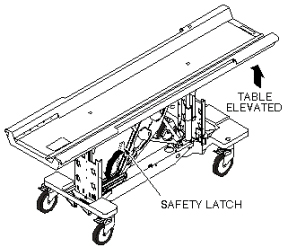
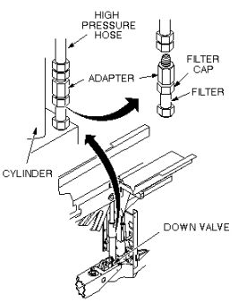
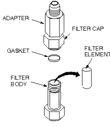

Operating Documentation
Direction 5440001-3, Rev# 6
Signa HDxt Service Methods
Module Version 4.0, Version Date 9/29/08
Operating Documentation |
| Required Persons | Preliminary Reqs | Procedure | Finalization |
|---|---|---|---|
| 1 | Not Applicable | Not Applicable | Not Applicable |
This procedure is applicable to the following table products:
Signa Lightweight Patient Transport Table
Signa Oncology Patient Transport Table Option
Signa OR-Compatible Patient Transport Table Option
Perform the following procedure once each year to maintain smooth, responsive operation of the patient transport hydraulics.
| Item | Qty | Effectivity | Part# | Manufacturer | |
|---|---|---|---|---|---|
| Filter Kit | 1 | - | 46-307878G1 | - | |
| Hydraulic Oil | 1 | - | 46-230006P2 | - | |
| Absorbent Toweling | As required | - | - | - | |
| 13/16” open end wrench | 1 | - | - | - | |
| ¾” open end wrench | 2 | - | - | - | |
| Ear Syringe | 1 | - | - | - | |
Undock table and remove from magnet room.
Raise patient transport table to highest elevation with Up foot pedal.
Remove patient transport side covers on right side (when facing magnet enclosure).
Lower the safety latch by disconnecting spring from scissors assembly (see Illustration 1).
Illustration 1: LOWERING SAFETY LATCH

Release hydraulic pressure by gently pressing Down foot pedal until table is supported by safety latch.
Place absorbent material or a drip pan on the floor under the cylinder block to catch any dripping of oil.
Raise patient transport table with UP foot pedal (three (3) or four (4) pumps) until table support bar is out of the way. This provides enough clearance to get a 13/16" wrench onto high pressure hose fitting (see Illustration 2).
Illustration 2: LOCATION OF HYDRAULIC FILTER

Turn wrench only enough to loosen the hose fitting initially, but not to let any oil leak out. Then lower the table using the Down foot pedal until table is again supported by safety latch.
Remove high-pressure hose from adapter. A small amount of oil will spill out of hose during removal; raise hose as high as possible to limit oil spillage.
| NOTE: | Equipment damage possibility. Do not damage gasket with wrench during disassembly, if reusing old gasket. It is better to replace gasket with a new one, to prevent oil from leaking. |
Remove filter cap from filter using two ¾" wrenches (see Illustration 3).
Illustration 3: REMOVE FILTER ELEMENT

Remove dirty oil from top of filter.
Remove gasket and filter element from filter body and throw away.
Clean outside threads (both ends) of filter body with a clean cloth.
Clean interior threads of filter cap with a clean cloth.
Install new filter element (Part # 46-230889P1), hole end down, in filter body.
| NOTE: | Equipment damage possibility. When reassembling filter cap, use care not to damage gasket; ensure that gasket is properly seated before tightening with wrench. If gasket is deformed, oil will leak out of this connection when reassembled. |
Install filter cap and new gasket (Part # 46-230889P2) onto filter body. Ensure that new gasket seats properly before tightening with wrench.
Reconnect high-pressure hose to cylinder block. Tighten by hand, then raise the table with Up foot pedal to allow clearance for wrench; tighten hose fitting securely.
Raise table with several pumps on the Up foot pedal and check for oil leaks. If leaks occur, tighten connections snugly, but do not over tighten; brass fittings will deform if over tightened.
Proceed to Patient Transport Hydraulics Bleeding.
No finalization steps.